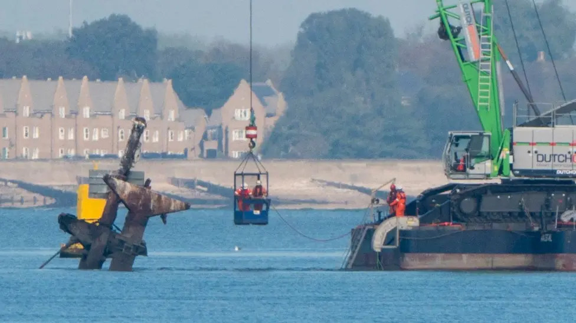
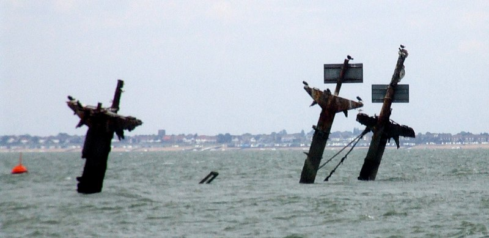
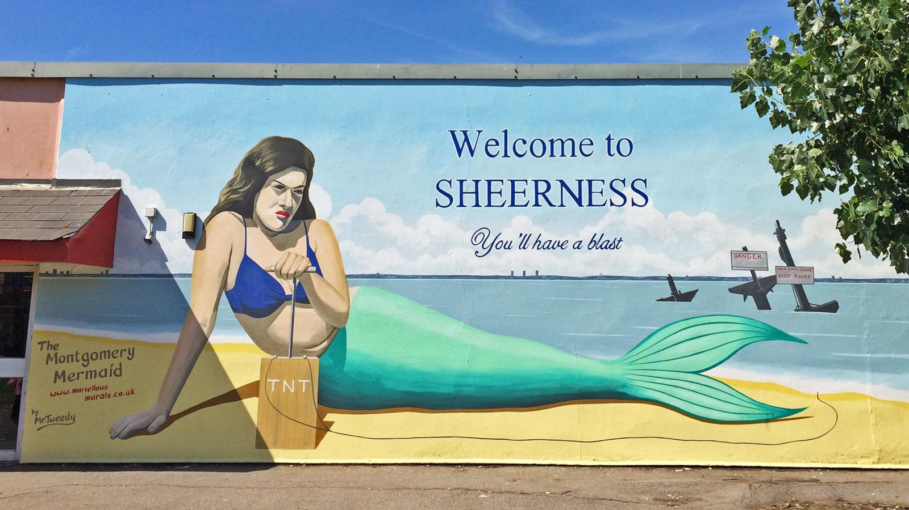

Goodbye to the Masts of the SS Richard Montgomery

Goodbye iconic masts. Photo from BBC news reporting.I had a delightful time last week watching Robin Nixon's livestream of the removal of all three of the SS Richard Montgomery's masts. For those of you who remember my talk at PyCon 2022 you'll know I've been obsessed with this ship for quite some time. It's a physical embodiment of the tendency we all have sometimes to ignore systemic problems until they get to the point where things might literally explode in our faces.
But now that the masts are finally gone, thanks to the efforts of the salvage team, what's left to say about the matter?

How might we feel about them now? Photo by Clem Rutter, Rochester, Kent CC BYIn a bizarre coda to the story of the SS Richard Montgomery, local communities have fought quite hard to keep the remnants of the masts after their eventual removal.
"The Government have finally now signed a contract with the removal company that will dismantle the masts. This landmark will be lost forever to people from Sheerness, and the emotion and those stories are at risk of being lost locally." Kevin McKenna, MP for Sittingbourne and Sheppey, in a speech to Parliament
This campaign succeeded and the masts are now on their way to Chatham Historic Dockyard which will conserve them so that they can be placed in a local museum. What a long, strange journey it's been. We've gone from the masts being a local source of shame and embarrassment in the local newspaper that people hated to be reminded of, to a kind of local pride in them and the 'heritage' they represent. It's the sort of English story that simultaneously delights and infuriates, proof that if you leave anything lying around here long enough, even unexploded ordinance, it somehow becomes a beloved part of the landscape.
I'm glad some of the threat posed by the wreck of the SS Richard Montgomery has been removed. But it's in danger of becoming just another romantic story of the past, a vague tale about heroism in WW2 perhaps. I think the removed masts would work much better as a monument to what they really represent. The SS Richard Montgomery went aground as a result of a careless mistake in navigation, was left filled with explosives after a hasty and incomplete salvage operation in the dying days of the war and then the problem was ignored by pretty well everyone in government. It became easier to kick the can down the road for someone else to deal with. The real heroes are the people who finally tackled this bug, the salvagers who saved the town of Sheerness from the consequences of the inevitable further decay of the wreck.

Mural by Dean Tweedy made for the Promenade Arts Festival in 2015 - photo Andy HebdenHas the British state gotten better now at dealing with infrastructure problems that could suddenly cripple society if they go wrong? Forgive my cynicism but it doesn't quite seem that way to me.
We could use a physical reminder of the commitment and strength of mind that it takes to tackle an ongoing bug that everyone would rather ignore. When the masts are in their final resting place I'll be paying my respects with a visit. I hope they'll be kept in a way that honours everything they represent, the good, the bad and the plain ridiculous.